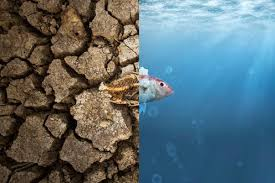
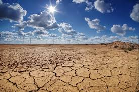

Solutions
There can be a variety of solutions for this immense global issue. Some solutions that would alter this situation are:
Building seawalls:
- Building these walls decrease the amount of flooding from tides and storms.
These barriers are built from a height of five to six feet above the actual sea level and cost near $600 to $2000/linear foot.
When these seawalls start to age or become damaged from constant exposure to saltwater or the impact of waves, they need to quickly be replaced.
In addition, when the wall is being rebuilt it has to be built higher than the last height due to the sea levels continuously rising.
The execusion time is near four to five years on average.
Using beaches as barriers:
- This solution is similar to the previous one about seawalls, however, the beaches and dunes act as a
natural wall and reduce the impact of storm surge. If the beach is extensive or the dune is larger, one or the other could stop amounts
of water from reaching/entering homes and roads. Towns could possibly add more amounts of sand to increase the beach’s size or to prevent
them from eroding. By using this form of natural infrastructure can protect against flooding and maintain beaches for local communities
to enjoy. The execution time is near twelve weeks.
Raising roads:
- Raising roads above the sea level can contribute to help drain water and reduce the numbers of tidal floods.
To secure that higher roads won’t channel floodwater into homes and stores at a lower altitude, cities most often use stormwater
pumps to remove the leftover water. The execution time is near two years.
Building stormwater pumps:
- Within higher seas, water doesn’t drain out into the ocean easily. Drainage systems are designed
to channel excess rainwater from the streets and drain it into the sea. However, the pressure from sea levels and high tides can
push large amounts of water into these pipes and cause the water to spill out onto the streets. Moreover, pumps can speed up the
process of transporting water out of the streets by vacuuming up the water from the floods and releasing it back into the sea. The execution
time is from two to five years.
Upgrading sewage systems:
- Flooding can disturb sewage systems and threaten septic tanks. Due to saltwater being corrosive,
it can breakdown tanks and result in sewage to pour out, which causes multiple health hazards. Towns can upgrade sewage systems
to restrict stormwater from entering pipes. By upgrading septic tanks or replacing them with sewer lines cost $15000/replacement and the execution
time is near three years.
Creating natural infrastructure:
- Coastal communities can restore natural infrastructure, which can act as a barrier against storms
and coastal flooding. Natural structures such as barrier islands, oyster & coral reefs, mangroves, seagrass, and salt marshes can work
independently or in unison with built infrastructure, like seawalls to absorb storm surge. These assignments are most often cost-effective
and can develop the natural environment for the community, and preserve important habitats. The execution time is one to two years and the time
for the habitat to get effective is one to twenty years.
Slowing land sinkage:
- Places like Hampton Road, Virginia have encountered land that’s sinking. This occurred due to the large amounts
of groundwater being pumped out of the earth and are disintegrating into empty spaces. Multiple towns can decrease the rate of sinkage by
limiting further groundwater pumping and establishing pilot projects to reverse land sinkage. The execution time is five to ten years.
Managing retreat:
- In a few coastal areas, shorelines are being disoriented to storms, rising sea levels, erosion, and subsidence.
Even though communities are implementing many of the solutions available to contribute to preventing extreme land loss, some are
beginning to consider relocation. This option might not be the most effective choice for the coastal communities who are approaching
the threat of sea levels rising. However, for some communities, it’s the most ideal solution for the safety of residents. The execution time
is five to twelve years.
The NASA Climate Change page on links includes more general information about this discussed topic.
The First Street page on links includes more information about these solutions.
Return to the top of the page.


